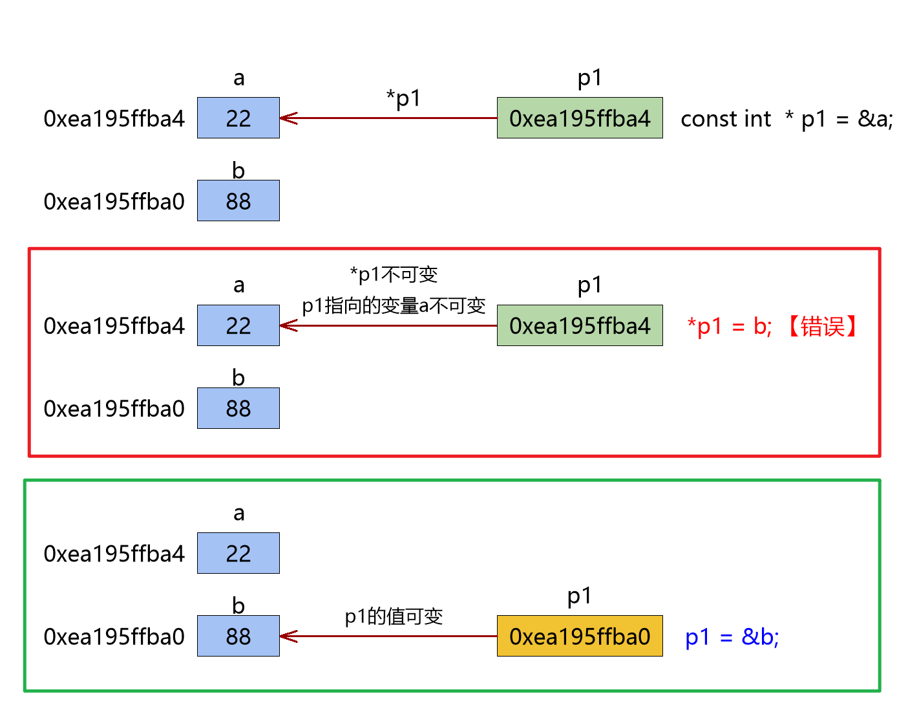
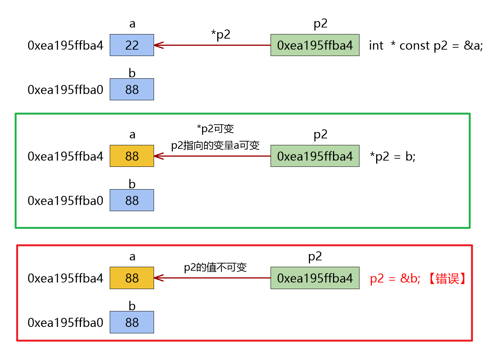
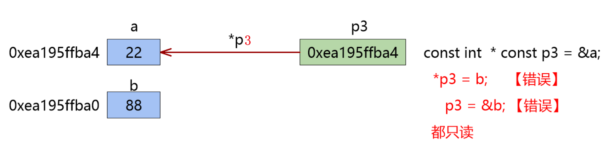

<!DOCTYPE lake>
<a class="yuque-card-link" href="https://cdn.nlark.com/yuque/0/2025/jpeg/43021193/1745824730870-df904a9f-1f4c-4055-97c5-4cda775feb2b.jpeg" rel="noopener noreferrer" target="_blank">board：board</a><p data-lake-id="ub0c51149" id="ub0c51149"><span data-lake-id="u2eb031be" id="u2eb031be">记忆小秒招： const 向后看，挨着谁，谁只读；</span></p><p data-lake-id="u5aabf9c3" id="u5aabf9c3"><span data-lake-id="u8040b5fa" id="u8040b5fa">例如，</span><span data-lake-id="uf7205e8d" id="uf7205e8d" style="color: #DF2A3F">const</span><span data-lake-id="u14021118" id="u14021118">  int </span><strong><span data-lake-id="u283ba581" id="u283ba581" style="color: #DF2A3F">*</span></strong><span data-lake-id="u3f80a347" id="u3f80a347">p;  const 挨着 *p，就是*p指向的变量值只读；</span></p><p data-lake-id="u4d85efc0" id="u4d85efc0"><span data-lake-id="u5cec9711" id="u5cec9711">          int * </span><strong><span data-lake-id="u5643cdb3" id="u5643cdb3" style="color: #D22D8D">const</span></strong><span data-lake-id="u23fc3b3b" id="u23fc3b3b"> </span><span data-lake-id="ua9320fc7" id="ua9320fc7" style="color: #AE146E">p</span><span data-lake-id="uc4b6606d" id="uc4b6606d">;   const挨着p， 则指令变量p的值只读；</span></p><h1 data-lake-id="oBD5m" id="oBD5m"><span data-lake-id="u705bf1f0" id="u705bf1f0">1&gt; </span><span data-lake-id="ud34b5829" id="ud34b5829" style="color: #601BDE">cont</span><span data-lake-id="u7e968ba6" id="u7e968ba6"> int *p</span></h1><span class="yuque-card-unsupported">[codeblock]</span><p data-lake-id="u6c62f3b5" id="u6c62f3b5"></p><p data-lake-id="u78c3dfa8" id="u78c3dfa8"><br/></p><p data-lake-id="ub6f91322" id="ub6f91322"><strong><span class="lake-fontsize-12" data-lake-id="u7764f85c" id="u7764f85c">const int *p</span></strong><span data-lake-id="uab3bab45" id="uab3bab45"> 与 int const *p 功能一样；</span></p><hr/><h1 data-lake-id="IEpYb" id="IEpYb"><span data-lake-id="uc2c17e17" id="uc2c17e17">2&gt; int * </span><span data-lake-id="uf87380a1" id="uf87380a1" style="color: #601BDE">const</span><span data-lake-id="ue2190e07" id="ue2190e07"> p</span></h1><span class="yuque-card-unsupported">[codeblock]</span><p data-lake-id="u0a9a9650" id="u0a9a9650"><br/></p><p data-lake-id="ue105cde7" id="ue105cde7"><br/></p><p data-lake-id="u7e9e4c43" id="u7e9e4c43"></p><hr/><h1 data-lake-id="zsXjK" id="zsXjK"><span data-lake-id="u772fece0" id="u772fece0">3&gt; </span><span data-lake-id="uf9e53448" id="uf9e53448" style="color: #601BDE">const</span><span data-lake-id="ufa0f4dfb" id="ufa0f4dfb"> int * </span><span data-lake-id="u3ad69caf" id="u3ad69caf" style="color: #601BDE">const</span><span data-lake-id="uccde4c6b" id="uccde4c6b"> p</span></h1><span class="yuque-card-unsupported">[codeblock]</span><p data-lake-id="u46e0c969" id="u46e0c969"></p>